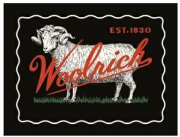

Trade Mark Journal No.2025/009 28 February 2025
WO0000001833291 (18,25)
Office of origin: Italy
Date of International Registration:23 April 2024
Date of designation in the UK:
23 April 2024

The mark contains the colours black, green, red and white.
International priority date claimed: 25 October 2023
(Italy)
(302023000155832)
- Class 18
- All/purpose athletic bags; articles of clothing for horses; artificial fur bags; bags for campers; bags for climbers; bags for sports clothing; bags for sports; bags for umbrellas; bags; beach bags; beach umbrellas [beach parasols]; Boston bags; briefcases; bucket bags; bumbags; business card holders in the nature of wallets; canvas bags; carry-on bags; carry-on suitcases; chain mesh purses; children's shoulder bags; clothing for pets; clutches [purses]; coin holders; collars for animals; cosmetic purses; costumes for animals; covers and wraps for animals; covers for animals; covers for parasols; cross- body bags; diplomatic bags; drawstring bags; driving licence cases; evening handbags; fashion handbags; fastenings for saddles; faux fur; felt pouches; flexible bags for garments; flight bags; fur; game bags [hunting accessories]; garment carriers; gym bags; handbags, purses and wallets; handbags; harness fittings; harness for animals; hat boxes for travel; haversacks; hiking bags; hiking rucksacks; hipsacks; horse blankets; hunting crops; key cases; kit bags; knitted bags, not of precious metals; leads for animals; leather bags and wallets; leggings for animals; luggage covers; nappy wallets; pouches for holding make-up, keys and other personal items; purses; reins; roller bags; rucksacks; saddle blankets; saddlebags; saddlecloths for horses; saddlery; semi-worked fur; shaving bags sold empty; shoe bags for travel; shoe bags; shoulder bags; slings for carrying infants; small bags for men; spats and knee bandages for horses; sports packs; straps for coin purses; straps for luggage; suitcases with wheels; suitcases; tie cases for travel; toiletry bags; tool bags sold empty; tool pouches, sold empty; towelling bags; travel baggage; travel cases; travel luggage; travelling bags; travelling sets [leatherware]; trunks [luggage]; umbrella covers; valises; vanity cases, not fitted; wash bags for carrying toiletries; waterproof bags; wheeled luggage; wheeled shopping bags; whips; work bags; wrist mounted carryall bags: all of the aforesaid goods predominantly made from pure wool; bags [envelopes, pouches] of leather, for packaging; bags made of imitation leather; briefcases [leather goods]; card wallets [leatherware]; cases of imitation leather; combination walking sticks and umbrellas: curried skins: frames for umbrellas or parasols: garment bags for travel made of leather: handbag frames: handbags made of imitation leather: handbags made of leather: hat boxes of leather; imitation leather; jockey sticks; key cases made of leather; leather cord; leather for harnesses; leather for shoes; leather laces; leather purses; leather wallets; leather, unworked or semi-worked: metal parts of umbrellas,· moleskin [imitation of leather]: polyurethane leather: purse frames; purses made of precious metal; saddle trees; shoulder belts [straps] of leather; straps made of imitation leather: travel bags made of plastic materials: travelling bags made of imitation leather: umbrella handles; umbrella sticks; umbrellas; leathercloth.
- Class 25
- Albs [clothing]; ankle boots; aprons [clothing]; ascots; athletic footwear; athletic shoes; baby underwear; bandanas [neckerchiefs]; barber smocks; baseball apparel; baseball footwear; basketball footwear; bath robes; bath shoes; bathing caps; beach clothes; beach robes; beach shoes; berets; bermuda shorts; bicycle footwear; bikinis; boas; bodices [lingerie]; body stockings; boleros; bomber blazers; bonnets; boots for motorcycling; boots; bowling footwear; bowties; boxer shorts; boxing footwear; boxing wear; boys' clothing; braces [suspenders] for clothing; bralettes; brassieres; burnouses; bustiers; bustle holder bands for obi (obiage); caftans; camiknickers; canvas footwear; cardigans; cashmere clothing; casual footwear; casualwear; chemisettes; children's footwear; children's underwear; children's wear; christening robes; climbing footwear; clogs; clothing for children; clothing for skiing; clothing for wear in judo practices; clothing for wear in wrestling games; clothing made of fur; clothing; coats; cocktail apparel; corsets [underclothing]; costumes; coveralls; cover-ups; crinolines; culotte skirts; cummerbunds; cyclists' clothing; dance apparel; dance clothing; dance shoes; deck shoes; disposable underwear; dress shoes; dressing gowns; driving shoes; duffel coats; dust coats; ear warmers (clothing); espadrilles; evening wear; fedoras; fezzes; field hockey footwear; fisherman's footwear; fishing boots; fishing wear; flat shoes; folk wear; footless socks; footless tights; footwear for women; footwear uppers; footwear; formalwear; foulards [clothing articles]; frock coats; gags and bibs; gaiters; galoshes; garments for protecting clothing; gilets; girdles; gloves [clothing]; golf footwear; golf wear; gowns for doctors; gym and sports shoes; gym boots; gym footwear; half-boots; hand warmers; handball footwear; dress handkerchiefs; headbands [clothing]; headgear; heavy jackets; heelpieces for footwear; heels; hiking footwear; hunting boots; infants' footwear; inner socks for footwear; inner soles; insoles for footwear; intermediate soles; jackets [clothing]; Japanese footwear; Japanese nightgowns (nemaki); Japanese style clogs and sandals; Japanese style socks (tabi); jerseys [clothing]; jogging outfits; jogging shoes; jumper suits; kilts; kimonos; knee warmers; knee-high stockings; knitted underwear; laboratory coats; ladies' clothing; leggings [leg warmers]; leisure shoes; leisurewear; leotards; light-reflecting jackets; linen and silk apparel; lingerie; liveries; loungewear; mackintoshes; mantillas; mantles; maternity clothing; men's footwear; menswear; miniskirts; morning coats; motorcycle clothing; motorists' clothing; mountaineering boots; mountaineering footwear; muffs [clothing]; neck scarves [mufflers]; neck tubes; neckties; negligees; nightcaps; nightgowns; outerwear; padded shorts for athletic use; parkas; peaked caps; pelisses; petticoats; plush clothing; pocket handkerchiefs; polo boots; polo shirts; pullstraps for shoes and boots; pyjamas; rain boots; rain footwear; riding apparel; riding shoes; rugby footwear; rugby wear; running footwear; running wear; sailing footwear; sailing wear; sailor apparel; sandals also disposable; sashes for wear; sedge hats (suge-gasa); shaping underwear; shawls; shirts; shoe straps; shoe toe caps; shrugs; ski balaclavas; ski boots; skiing and snowboarding footwear; skirts; slipper socks; slippers also disposable; slips [underclothing]; sneakers; snow apparel; snow boots; snowboard shoes; soccer footwear; socks; soles for footwear; sports robes; stiffeners for boots; stockings; stoles; streamlined apparel; stretch pants; stuffjackets [clothing]; suits; sun visors; surf wear; suspenders; sweat shirts; sweat suits; sweat-absorbent stockings; sweatbands; sweaters; sweatshirt apparel; tai/leurs; tap pants; tee-shirts; tennis footwear; tennis wear; thermal socks; thermal underwear; thermally insulated clothing; tights [clothing]; tongues for shoes and boots; tops [clothing]; training shoes; trench coats; triathlon wear; shorts; trousers; tunics; turbans; turtlenecks; twin sets; underpants; underwear; uniforms; vest tops; visors; volleyball footwear; waist belts; waist cinchers; waistcoats; walking shoes; water socks; waterproof boots for fishing; waterproof clothing; weatherproof apparel; wedding apparel; welts for footwear; white coats for hospital use; women's footwear; women's underwear; wooden shoes; woolen clothing; work boots; work clothes; work gowns; work shoes; wrist warmers; yoga wear; all the aforesaid goods predominantly made from pure wool; clothing of imitations of leather; coats of denim; denim jeans; fittings of metal for footwear; footwear made of yinyl; leather footwear; leather, rubber, or plastic soles; non-slipping devices for footwear: protective metal members for shoes and boots: rubber footwear.
JOHN RICH & SONS INVESTMENT HOLDING COMPANY
Representative: Potter Clarkson LLP, Chapel Quarter, Mount Street Nottingham NG1 6HQ UNITED KINGDOM